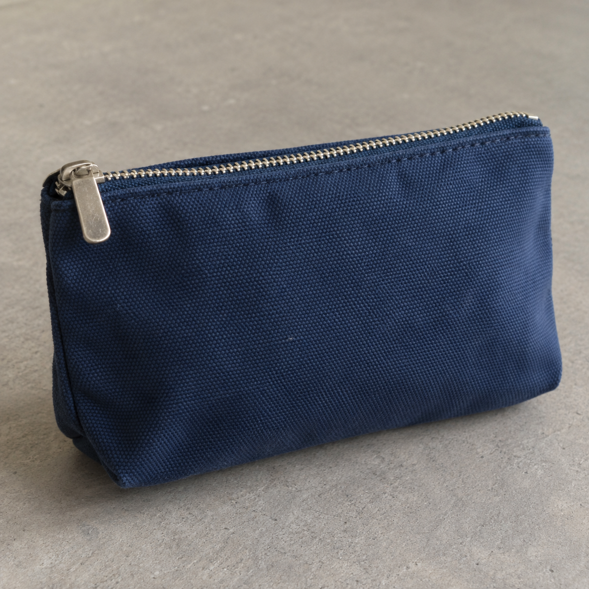

Home / First documented test
One image test of Let's Enhance Prime
A larger image with stronger texture, plus a watermark and limits on what we can conclude.
VYRA Production · Tested September 26, 2026 · No affiliate link or paid partnership in this article.
Before and after
{kind=link}

{kind=link}
How we tested it
We uploaded the source to Let's Enhance, selected Prime and Auto size, and kept Light AI and background removal off. The free account balance changed from 10 to 9 credits. We saved the output and compared both files at full size.
| Input | Generated PNG · 1254 × 1254 px |
|---|---|
| Output | Watermarked JPG · 1924 × 1924 px |
| Mode | Prime · Auto size |
| Credit use | 1 credit for this run |
What changed
- The woven fabric pattern and zipper edges look more pronounced.
- The background and some highlights look a little brighter.
- The fine fabric pattern may include newly synthesized detail. We cannot present it as recovered physical detail.
- The free download has a Let's Enhance watermark in the lower-left background.
This output may be useful as a larger illustration if AI-generated texture is acceptable. For an accurate product representation, check labels, engravings, surface detail and color against the source before publishing. Our sample has no printed label, so it cannot demonstrate text fidelity.
Limits and next check
This is one run on one synthetic image. We did not test a camera photo, text, faces, motion blur, other modes or paid downloads. A separate test with an owned camera photo would be needed before a broader recommendation for product photography. Consult the vendor's current pricing and plan limits before processing: they can change.
There is no referral or affiliate link on this page. For questions or corrections, contact vyra.production@gmail.com.